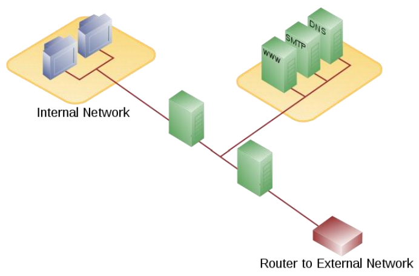
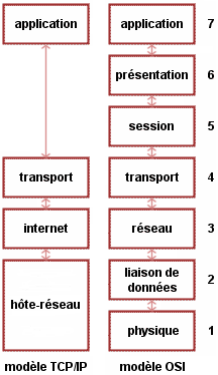
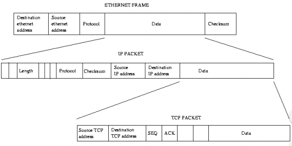
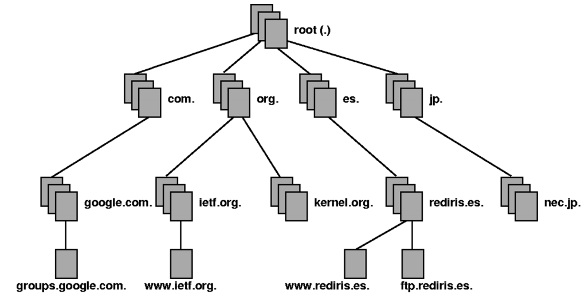
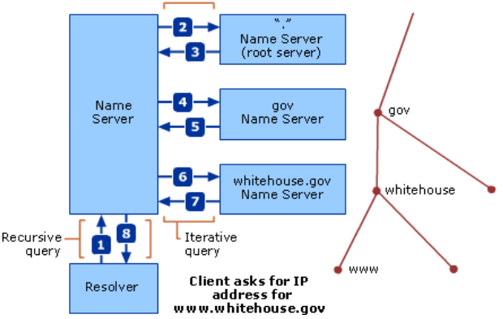
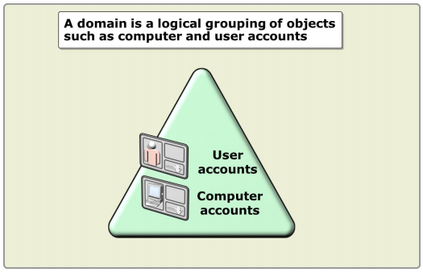

Module 1 : Les bases des Réseaux :
-
Intranet / Extranet / DMZ :
-
Les sous-réseaux et leurs classes :
Le mot sous-réseau a deux significations. Sa signification ancienne mais plus générale est un réseau (Réseau informatique) physique faisant parti d'un réseau plus global (Internet). Au niveau d'IP, un sous-réseau est un sous-ensemble d'un réseau de classe.
L'utilisation de sous-réseau dans un réseau IP permet de diviser un gros réseau unitaire en ce qui apparaît comme plusieurs sous-réseaux. Cette notion a été introduite avant l'arrivée des classes de réseau dans IPv4, pour permettre à un seul site d'avoir un certain nombre de réseaux locaux. Même après l'introduction des classes de réseau, les sous-réseaux restent utiles pour réduire le nombre d'entrées dans la table de routage pour Internet en cachant des informations sur les sous-réseaux individuels d'un site. De plus, cela a permis de réduire la surcharge réseau, en divisant le nombre d'hôtes recevant des appels broadcast IP.
Le préfix réseau : Le groupe de Bits qui définit l'adresse d'un sous-réseau. Ce groupe est commun à tous les hôtes appartenant à ce sous-réseau.
L'identification de l'hôte : Le groupe de Bits restant, défini l'adresse de l'hôte. Ce groupe est distinct pour chaque hôte appartenant au même sous-réseau.
Le masque d'un sous-réseau : Le masque de sous-réseau est un masque indiquant le nombre de Bits utilisés pour identifier le sous-réseau, et le nombre de bits caractérisant les hôtes (ce qui indique aussi le nombre d'hôtes possibles dans ce sous-réseau).
Les classes des sous-réseaux :
Classe Bits les plus significatifs Début Fin Masque par défaut en notation décimale Notation CIDR A 0 1.0.0.0 127.0.0.0 255.0.0.0 /8 B 10 128.0.0.0 191.255.0.0 255.255.0.0 /16 C 110 192.0.0.0 233.255.255.0 255.255.255.0 /24 D 1110 224.0.0.0 239.255.255.0 255.255.255.0 E 1111 240.0.0.0 255.255.255.0 255.255.255.0 -
Réseau Local :
Un réseau local, souvent désigné par l'acronyme anglais LAN de Local Area Network, est un réseau informatique à une échelle géographique relativement restreinte, par exemple une salle informatique, une habitation particulière, un bâtiment ou un site d'entreprise.
Il permet de brancher, dans un rayon limité et sur un seul câble, tous types de terminaux (micro-ordinateur, téléphone, caisse enregistreuse, etc.). Historiquement, le pionnier dans ce domaine est le réseau Ethernet conçu par la société Rank Xerox, puis IBM a lancé son propre système, l'anneau à jeton ou Token Ring dans les années 1980.
C'est toutefois le réseau Ethernet qui s'est imposé, grpace à la simplicité de sa mise en oeuvre et à l'augmentation progressive des débiits de connexion, passés de 10 Mégabits/secondes, puis 100 Mégabits/s, pour atteindre aujourd'hui 1 Gigabits/s et même 10 Gigabits/s sur les réseaux les plus performants.
Adresses IP Réseau/Masque Nombre d'adresses 10.0.0.0 - 10.255.255.255 10.0.0.0/8 16777216 (224) 172.16.0.0 - 172.31.255.255 172.16.0.0/12 1048576 (220) 192.168.0.0 - 192.168.255.255 192.168.0.0/16 65536 (216) Ces sous-réseaux :
-
Peuvent utiliser le TCP/IP sans avoir de clonflit avec les adresses de l'"extérieur".
-
Peuvent attribuer des espaces d'adresses en fonction des besoins de l'entreprise de manière indépendante.
-
Sont protégés de l'"extérieur" car ils ne sont pas connus par Internet.
-
Ne permettent pas aux hôtes de communiquer directement vers l'"extérieur" mais nécessitent l'utilisation d'un proxy ou d'un routeur.
-
Sont indépendants des fournisseurs d'accès.
-
-
Réseau étendu :
Un réseau étendu, souvent désigné par l'anglais Wide Area Network (WAN), est un réseau informatique couvrant une grande zone géographique, typiquement à l'échelle d'un pays, d'un continent, voire de la planète entière. Le plus grand WAN est le réseau Internet.
-
Zone démilitarisée :
Une zone démilitarisée est un sous-réseau (DMZ) isolé par deux pare-feu (firewall). Ce sous-réseau contient des machines se situant entre un réseau interne (LAN - postes clients) et un réseau externe (typiquement, Internet).
La DMZ permet à ces machines d'accéder à Internet et/ou de publier des services sur Internet sous le contrôle du pare-feu externe. En cas de compromission d'une machine de la DMZ, l'accès vers le réseau local est encore contrôlé par le pare-feu interne.

-
-
TCP/IP :
-
Définition du protocole TCP/IP :
Transmission Control Protocol/Internet Protocol. Protocole utilisé sur le réseau Internet pour transmettre des données entre deux postes de travail.
Le protocole de transport, TCP, prend à sa charge l'ouverture et le contrôle de la liaison entre deux stations de travail.
Le protocole d'adressage, IP, assure le routage des paquets de données.
À voir comme un langage universel permettant à deux postes de travail de communiquer entre eux peu importe leur système d'exploitation.
-
Les couches du modèle TCP/IP :
La couche hôte-réseau :
Cette couche est assez "étrange". En efet, elle semble "regrouper" les couches physique et liaison de données du modèle OSI. En fait, cette couche n'a pas vraiment été spécifiée; la seule contrainte de cette couche, c'est de permettre à un hôte d'envoyer des paquets IP sur le réseau. L'implémentation de cette couche est laissée libre. De manière plus concrète, cette implémentation est typique de la technologie utilisée sur le réseau local. Par exemple, beaucoup de réseaux locaux utilisent Ethernet; Ethernet est une implémentation de la couche hôte-réseau.
La couche internet :
Cette couche est la clé de voûte de l'architecture. Cette couche réalise l'interconnexion des réseaux (hétérogènes) distants sans connexion. Son rôle est de permettre l'injection de paquets dans n'importe quel réseau et l'acheminenent de ces paquets indépendamment les uns des autres jusqu'à destination. Comme aucune connexion n'est établie au préalable, les paquets peuvent arriver dans le désordre; le contrôle de l'ordre de remise est éventuellement la tâche des couches supérieures.
Du fait du rôle imminent de cette couche dans l'achemeinement des paquets, le point critique de cette couche est le routage. C'est en ce sens que l'on peut se permettre de comparer cette couche avec la couche réseau du modèle OSI.
La couche internet possède une implémentation officielle : le protocole IP (Internet Protocol).
La couche transport :
Son rôle est le même que celui de la couche transport du modèle OSI : permettre à des entités paires de soutenir une conversation.
Officiement, cette couche n'a que deux implémentations : le protocole TCP (Transmission Control Protocol) et le protocol UDP (User Datagram Protocol). TCP est un protocole fiable, orienté connexion, qui permet l'acheminement sans erreur de paquets issus d'une machien d'un internet à une autre machine du même internet. Son rôle est de fragmenter le message à transmettre de manière à pouvoir le faire passer sur la couche internet. À l'inverse, sur la machine de destination, TCP replace dans l'ordre les fragments transmis sur la couche internet pour reconstruire le message initial. TCP s'occupe également du contrôle de flux de la connexion.
UDP est en revanche un protocole plus simple que TCP : il est non fiable et sans connexion. Son utilisation présuppose que l'on n'a pas besoin ni du contrôle de flux, ni de la conservation de l'ordre de remise des paquets. Par exemple, on l'utilise lorsque la couche application se charge de la remise en ordre des messages. On se souvient que dans le modèle OSI, plusieurs couches ont à charge la vérification de l'ordre de remise des messages. C'est là un avantage du modèle TCP/IP sur le modèle OSI, mais nous y reviendrons plus tard. Une autre utilisation d'UDP : la transmission de la voix. En effet, l'inversion de 2 phonèmes ne gêne en rien la compréhension du message final. De manière plus générale, UDP intervient lorsque le temps de remise des paquets est prédominant.
La couche application :
Contrairement au modèle OSI, c'est la couche immédiatement supérieure à la couche transport, tout simplement parce que les couches présentation et session sont apparues inutiles. On s'est en effet aperçu avec l'usage que les logiciels réseau n'utilisent que très rarement ces 2 couches, et finalement, le modèle OSI dépouillé de ces 2 couches ressemble fortement au modèle TCP/IP.
Cette couche contient tous les protocoles de haut niveau, comme par exemple Telnet, TFTP (Trivial File Transfer Protocol), SMTP (Simple Mail Transfer Protocol), HTTP (HyperText Transfer Protocol). Le point important pour cette couche est le choix du protocole de transport à utiliser. Par exemple, TFTP (surtout utilisé sur réseaux locaux) utilisera UDP, car on part du principe que les liaisons physiques sont suffisamment fiables et les temps de transmission suffisamment courts pour qu'il n'y ait pas d'inversion de paquets à l'arrivée. Ce choix rend TFTP plus rapide que le protocole FTP qui utilise TCP. À l'inverse, SMTP utilise TCP, car pour la remise du courrier électronique, on veut que tous les messages parviennent intégralement et sans erreurs.
-
La Trame TCP/IP :
À titre informatif :
 -
Les ports les plus communs :
Les ports à connaître :
-
225 : SSH
-
25 : SMTP
-
80 : HTTP
-
443 : HTTPS
-
3389 : RDP
-
-
-
Domain Name System :
-
Définition du DNS :
Le Domain Name System est un système de nomenclature de type hiérarchique pour les postes de travail, les services ou les ressources connectés à un réseau privé ou à Internet.
Le serveur DNS permet d'associer des adresses IP à des noms d'hôtes, et inversement. Chaque domaine doit être défini dans un serveur DNS. Ces serveurs peuvent être interrogés pour associer un nom d'hôte à une adresse IP ou bien pour récupérer les adresses IP des serveurs de noms associés à un nom de domaine (entre autres requêtes possibles).
-
Comment le DNS fonctionne :
Le fonctionnement du DNS ce base sur le Fully Qualified Domain Name (FQDN) qui permet au travers de la hiérarchie de définir la position de l'hôte dans l'arborescence.
 -
Les types d'enregistrements DNS :
Description Type Data Start of Authority SOA Owner Name
Primary Name Server DNS Name, Serial Number
Refresh Interval
Retry Interval
Expire Time
Minimum TTL
Host A Owner Name (Host DNS Name)
Host IP Address
Mail Exchanger MX Owner Name
Mail Exchange Server DNS Name, Preference Number
Canonical Name (an alias) CNAME Owner Name (Alias Name) Host DNS Name
-
Les zones DNS :
Il existe par défaut trois zones DNS :
-
Primaire
-
Secondaire
-
Stub
-
-
Les requêtes DNS :
Il existe de types de requêtes DNS :
-
Les requêtes Récursives
-
Les requêtes Itératives
-
-
-
Dynamic Host Configuration Protcol :
-
Définition du serveur DHCP :
Dynamic Host Configuration Protocol (DHCP) est un terme anglais désignant un protocole réseau dont le rôle est d'assurer la configuration automatique des paramètres TCP/IP d'une station, notamment en lui assignant automatiquement une adresse IP et un masque de sous-réseau, DHCP peut aussi configurer l'adresse de la passerelle par défaut, des serveurs de noms DNS et des serveurs de noms WINS.
-
Pourquoi utiliser le DHCP :
La conception initiale d'IP supposait la préconfiguration de chaque hôte connecté au réseau avec les paramètres TCP/IP adéquats : c'est l'adressage statique. Sur des réseaux de grandes dimensions ou étendues, où des modifications interviennent souvent, l'adressage statique engendre une lourde charge de maintenance et des risques d'erreurs. En outre les adresses assignées ne peuvent être utilisées même si l'ordinateur qui la détient n'est pas en service.
DHCP apporte une solution à ces deux inconvénients :
-
Seuls les ordinateurs en service utilisent une adresse de l'espace d'adressage;
-
Toute modification des paramètres (adresse de la passerelle, des serveurs de noms) est répercutée sur les stations lors du redémarrage
La modification de ces paramètres est centralisée sur les serveurs DHCP.
-
-
Les différents termes du DHCP :
-
Scope : est la plage d'adresses IP que le serveur DHCP va pouvoir attribuer.
-
Lease : est le temps durant lequel l'hôte va pouvoir utiliser l'IP qui lui a été assigné.
-
Reservation : est la réservation d'une adresse IP pour un hôte spécifique.
-
Exclusion : est le fait d'exclure une partie des adresses IP que le serveur peut attribuer.
-
DHCP relay agent : est un service de relais qui va permettre à des hôtes distant de communiquer avec le serveur DHCP.
-
Automatic Private IP Addressing (APIPA) : est le système d'attribution d'IP automatique dans le cas où le serveur DHCP est inexistant (169.254.x.x).
-
-
Comment le DHCP fonctionne :
L'ordinateur équipé de TCP/IP, mais dépourvu d'adresse IP, envoie par diffusion un datagramme (DHCP DISCOVER) qui s'adresse au port 67 de n'importe quel serveur à l'écoute sur ce port. Ce datagramme comporte entre autres l'adresse physique (MAC) du client.
Tout serveur DHCP ayant reçu ce datagramme, s'il est en mesure de proposer une adresse (DHCP OFFER) sur le réseau auquel appartient le client, diffuse une offre DHCP à l'attention du client (sur son port 68), identifié par son adresse physique. Cette offre comporte l'adresse IP du serveur, ainsi que l'adresse IP et le masque de sous-réseau qu'il propose au client. Il se peut que plusieurs offres soient adressées au client.
Le client retient une des offres reçues (la première qui lui parvient), et diffuse sur le réseau un datagramme de requête DHCP (DHCP REQUEST). Ce datagramme comporte l'adresse IP du serveur et celle qui vient d'être proposée au client. Elle a pour effet de demander au serveur choisi l'assignation de cette adresse, l'envoi éventuel des valeurs des paramètres, et d'informer les autres serveurs qui ont fait une offre qu'elle n'a pas été retenue.
Le serveur DHCP choisi élabore un datagramme d'accusé de réception (DHCP ack) qui assigne au client l'adresse IP et son masque de sous-réseau, la durée du bail de cette adresse, deux valeurs T1 et T2 qui déterminent le comportement du client en fin de bail, et éventuellement d'autres paramètres :
-
adresse IP de la passerelle par défaut
-
adresses IP des serveurs DNS
-
addresses IP des serveurs WINS
-
-
Module 2 : Introduction à la gestion d'un environnement Microsoft Windows Server 2008 :
-
Les rôles d'un serveur :
-
Les différentes éditions Windows Server 2008 :
Les différentes éditions à retenir :
-
Windows Server 2008 Standard
-
Windows Server 2008 Enterprise
-
Windows Server 2008 Datacenter
-
Windows Server 2008 Core
-
-
Définition des Rôles :
Les rôles d'un serveur définissent sa fonction primaire et peuvent être de différents type tels que :
-
Serveur d'Annuaire de Services
-
Serveur DNS
-
Serveur de Fichiers
-
Serveur d'Impression
-
Serveur Web
-
...
-
-
Quels sont les rôles d'infrastructure :
Les rôles dédiés à l'infrastructure sont :
-
Active Directory Domain Services
-
Active Directory Certificate Services
-
Active Directory Rights Management Services
-
DHCP Server
-
DNS Server
-
Fax Server
-
File Services
-
Hyper-V
-
Network Policy andAccess Services
-
Print Services
-
Terminal Services
-
Windows Deployment Services
-
-
Quels sont les rôles applicatifs :
Les rôles applicatifs sont :
-
Serveur Applicatif
-
Service UDDI
-
Serveur Web Applicatif
-
-
Quels sont les rôles Active Directory :
Les rôles de l'Annuaire de Services sont :
-
Active Directory Domain Services
-
Active Directory Lightweight Directory Services
-
Active Directory Certificate Services
-
Active Directory Rights Management Services
-
Active Directory Federation Services
-
-
intégration de l'AD DS avec les les autres rôles Active Directory :
Le rôle de l'Annuaire de Services du domaine (Active Directory Domain Services) peut englober les autres rôles de l'Annuaire. Dans la majorité des cas les autres rôles sont dépendant de ce premier.
-
Fonctionnalités d'un serveur Windows 2008 (Features) :
Les Fonctionnalités (ou Features) d'un serveur vont permettre d'installer un service de type applicatif.
Quelques fonctionnalités d'un serveur Windows 2008 :
-
.Net Framework
-
BitLocker Drive Encryption
-
Network Load Balancing
-
Failover Clustering
-
Window PowerShell
-
...
-
-
La version Windows Server 2008 Core :
La version Windows Server 2008 Core a les particularités suivantes :
-
Nombre des rôles/fonctionnalités réduites
-
Pas d'interface graphique
-
Sécurité accrue
-
-
-
Aperçu d'un Active Directory :
-
Défintion d'un Annuaire de Services du domaine :
L'Active Directory est un annuaire au sens informatique et technique chargé de répertorier tout ce qui touche au réseau comme le nom des utilisateurs, des imprimantes, des serveurs, des dossiers partagés, etc. L'utilisateur peut ainsi trouver facilement des ressources partagées, et les administrateurs peuvent contrôler leurs utilisations grâce à des fonctionnalités de distribution, de duplication, de partitionnement et de sécurisation des accès aux ressources répertoriées.
Une arborescence Active Directory est composé de :
-
La forêt : ensemble de tous les sous-domaines Active Directory.
-
L'arbre : domaine et toutes ramifications. Par exemple, dans l'arbre domaine.tld, sous1.domaine.tld, sous2.domaine.tld et photo.sous1.domaine.tld sont des sous-domaines de domaine.tld.
-
Le domaine : constitue les feuilles de l'arborescence. photo.sous1.domaine.tld peut-être un domaine au même titre que domaine.tld.
-
-
Les avantages de l'Active Directory :
Les avantages d'utiliser un Annuaire de Services sont :
-
Simplification de la gestion de la sécurité
-
Stockage récurrent des informations
-
Utilisation des Stratégies de Groupes
-
Extensibilité
-
Délégation de l'administration
-
-
Définition d'un Domaine :
Chez Microsoft, un domaine est une entité logique vue comme une enveloppe étiquetée. Il reflète le plus souvent une organisation hiérarchique dans une entreprise. Par exemple, le domaine "COMPTA" désigne l'ensemble des machines réseau (stations, imprimantes, ...) du service Comptabilité, et les comptes utilisateurs qui sont autorisés à s'y connecter.
Le domaine permet à l'administrateur réseau de gérer plus efficacement les utilisateurs des stations déployées au sein de l'entreprise car toutes ces informations sont centralisées dans une même base de données.
Cette base de données est stockée sur des serveurs particuliers (Windows Server NT4, 2000, 2003, 2008, 2008R2), appelés Contrôleurs de Domaine (Domain Controller, en anglais).
 -
Définition d'une unité organisationnelle (Organizational Unit OU) :
Une Unité organisationnelle (Organizational Units; OU; UO) est un objet qui permet de hiérarchiser l'Active Directory.
-